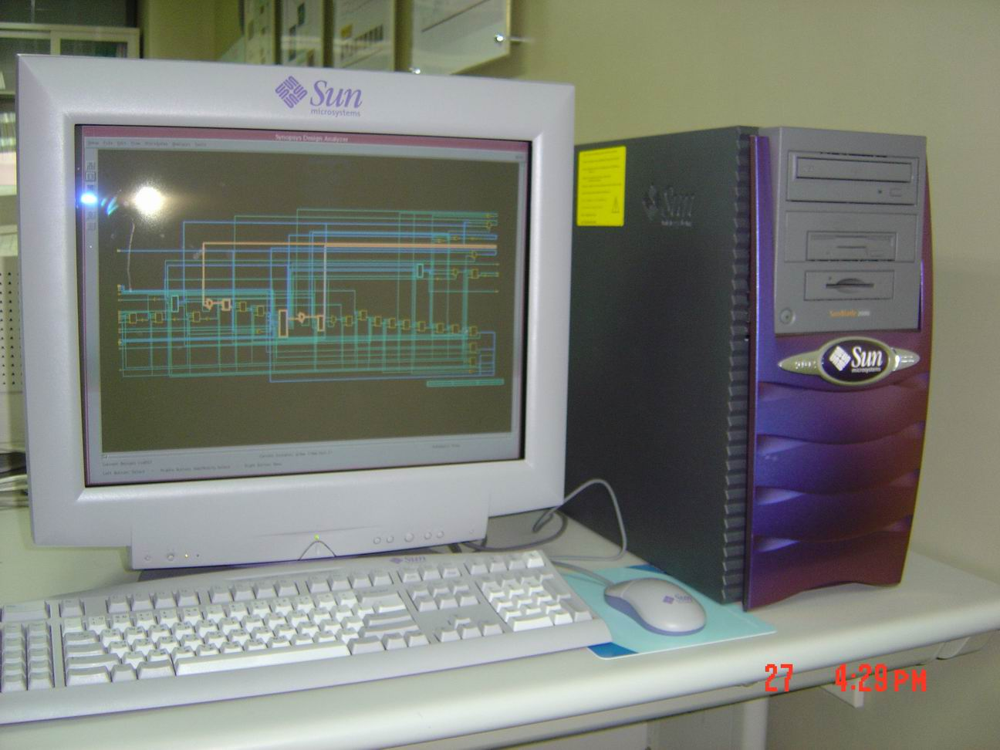

name: inverse layout: true class: center, middle, inverse --- #Microservices ## The bento box of architectures .footnote[Drew Tayman</br>andrew.tayman@fireeye.com] --- ## They're not just smaller versions of traditional services --- #"Where does my code run?" --- ## "That box on that desk"  --- ## "That box on my network" --- ## "That tier of the stack" --- ## "That's a big stack" --- # Where are we today? --- # Service Oriented Architecture --- # Why is SOA so popular? ## It maximizes utilization of shared resources in virtualized environments. --- # The times they are a changin --- <img src="automation.png" width="540px"/> --- layout: false class: center, middle .left-column[ ## CD and CI ] .right-column[ # Continuous Delivery Pipeline ## Small cycles of development that ensure software can be delivered at any time. ] --- layout: false class: center, middle .left-column[ ## CD and CI ### - Puppet / Chef ] .right-column[ ## Allows you to repeatably provision boxes with standard configurations. ] --- layout: false class: center, middle .left-column[ ## CD and CI ### - Puppet / Chef ### - Docker ] .right-column[ # Docker <img src="docker-vm-container.png" width="540px"/> ## Makes applications more like OS process than heavy virtual machines. Allows much higher application density on a server. ] --- layout: false class: center, middle .left-column[ ## CD and CI ### - Puppet / Chef ### - Docker ### - Testing ] .right-column[ ## When you have build server you can automate a lot of your testing. ] --- layout: false class: center, middle .left-column[ ## CD and CI ### - Puppet / Chef ### - Docker ### - Testing ### - Monitoring ] .right-column[ ## Nagios, Logstash, Graphite, etc... can give you visibility into whether or not your application is running correctly / performantly. ] --- template: inverse # Microservices are the first post-continuous delivery architecture --- template: inverse #They are rooted in Amazon's attitude of "you build it, you run it" --- template: inverse #You own a product from development though its production life cycle. --- layout: false class: center, middle .left-column[ ## Microservices ### - Monoliths ] .right-column[ ## They are small containers that contain exactly what they need to run. ~1000 LOC-ish per service ] --- layout: false class: center, middle .left-column[ ## Microservices ### - Monoliths ### - Coupling ] .right-column[ ## They force you to be explicit about coupling. ] --- layout: false class: center, middle .left-column[ ## Microservices ### - Monoliths ### - Coupling ### - Orchestration ] .right-column[ ## They prefer "choreography to orchestration" ] --- layout: false class: center, middle .left-column[ ## Microservices ### - Monoliths ### - Coupling ### - Orchestration ] .right-column[ ] --- layout: false class: left, middle .left-column[ ## Microservices ### - Monoliths ### - Coupling ### - Orchestration ### - Decentralized ] .right-column[ #ACID vs BASE - `ACID` (Atomicity, Consistency, Isolation, Durability) - guarantees transactions are processed reliably. - `BASE` (Basically Available, Soft state, Eventual consistency) - gives up on consistency in favor of performance / scalability. [The CAP Theorem](http://webpages.cs.luc.edu/~pld/353/gilbert_lynch_brewer_proof.pdf) states that as your system becomes more distributed it will prefer BASE to acid. Due to the decentralized nature of microservices transactions are very difficult and will always favor eventual consistency. ] --- layout: false class: center, middle .left-column[ ## Microservices ### - Monoliths ### - Coupling ### - Orchestration ### - Decentralized ] .right-column[ ###Consistency, Availability, Partition Tolerance <img src="cap.svg" width="640px"/> ] --- layout: false class: left, middle .left-column[ ## Microservices ### - Monoliths ### - Coupling ### - Orchestration ### - Decentralized ### - Testing ] .right-column[ #Testing - You can and should write unit tests to guarantee the functionality of your code. - Usually these are not enough because you are part of a larger system. - Something like [PACT](https://github.com/realestate-com-au/pact), [PACTO](https://github.com/thoughtworks/pacto), or JANUS(https://github.com/gga/janus) to document interface contracts between components. ] --- layout: false class: center, middle .left-column[ ## Microservices ### - Monoliths ### - Coupling ### - Orchestration ### - Decentralized ### - Testing ] .right-column[ #JANUS ] --- layout: false class: left, middle .left-column[ ## Microservices ### - Monoliths ### - Coupling ### - Orchestration ### - Decentralized ### - Testing ### - Flags ] .right-column[ #Feature Flags - Feature flags can play a prominent role in A/B testing and operational rampups. - Etsy has a [Feature API](https://github.com/etsy/feature) and is a major proponent of the technology. - Allow you to roll out a feature to a limited number of users, monitor logs, and increase / decrease % of users over time in production. ] --- class: center,middle,inverse #What does all this get you? --- class: center,middle,inverse #NETFLIX --- class: left,middle,inverse #Benefits ## Asynchronicity - You do things like ask the same question of multiple services and take the first response. ## Deployment time - You can / should have code in production within a few days vs a few weeks / months with more traditional monolith applications. ## Reporting - You can get much more fine grained reporting concerning usage / load of services within your architecture. ## CQRS (Command Query Responsibility Segregation) - You can use a different model to update information than to read information. --- class: center,middle,inverse #Risks of Microservices --- class: center,middle,inverse --- class: center,middle,inverse # Microservices are a specific architecture to solve a specific problem #### risk of being out-innovated outweighs all else. --- layout: false class: left, middle .left-column[ ## Risks ### - Monitoring ] .right-column[ ## You have to get `MUCH` better at monitoring. - When you have thousands of independent services you need specific tooling around automatically handing common fault modes. - Its unrealistic to debug with a bunch of shells open - You will need to capture metrics and logs, then aggregate them up into "synthetic transactions" - You will need to be able use something like a transaction id to track activity across services. ] --- layout: false class: left, middle .left-column[ ## Risks ### - Monitoring ### - Consistency ] .right-column[ ## You need a consistent platform on which to build services - Projects like [Dropwizard](http://www.dropwizard.io/) that allow you to define a service template that you inject code into. <img src="dropwizard.png" width="140px" style="position: relative; left: 25%"/> ] --- layout: false class: left, middle .left-column[ ## Risks ### - Monitoring ### - Consistency ### - Inf. Maturity ] .right-column[ ## Your infrastructure (both hardware and software) needs to be fault tolerant - You good governance around things like timeouts to prevent zombies in your datacenter. - You should also implement external "circuit breakers" so that services can know, before execution, if their downstream dependencies are available or not. - This will prevent avoid cascading failures. - Developers need to maintain / honor contracts they publish so that consumers can reliably use their services. ] --- layout: false class: left, middle .left-column[ ## Risks ### - Monitoring ### - Consistency ### - Inf. Maturity ### - Testing ] .right-column[ ## You need a mature test environment that can reliably determine if code changes will create issues in production. - Most testing needs to be automated. This includes both intra-process and inter-process testing. - Must test all the things - performance, service exclusions, datacenter outages, etc... - Human QA should be involved only for spot-checking and "X-Factor" tests. Things that would be hard for a computer to know or interactions that might be unexpected. ] --- layout: false class: center, middle .left-column[ ## Risks ### - Monitoring ### - Consistency ### - Inf. Maturity ### - Testing ### - NOTE ] .right-column[ # You can mix-and-match microservices with a traditional SOA ] --- class: center, middle # Further Reading ### [Continuous Delivery](http://www.amazon.com/Continuous-Delivery-Deployment-Automation-Addison-Wesley/dp/0321601912) ### [Building Microservices](http://shop.oreilly.com/product/0636920033158.do) ### [Software Architecture Fundamentals](http://shop.oreilly.com/product/110000195.do)